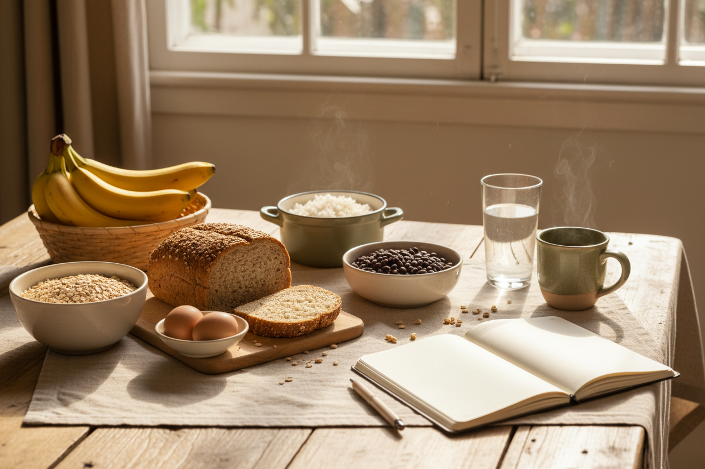
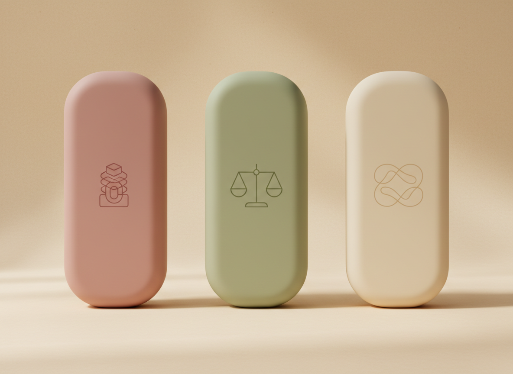
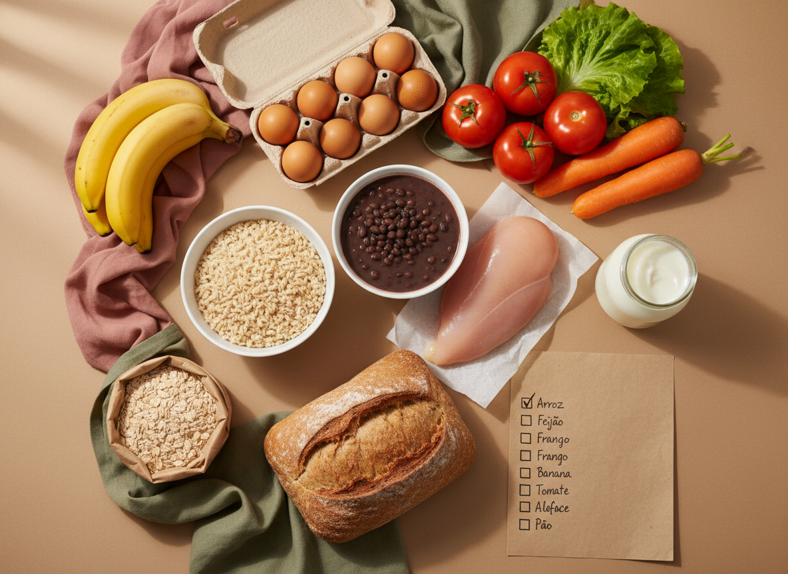
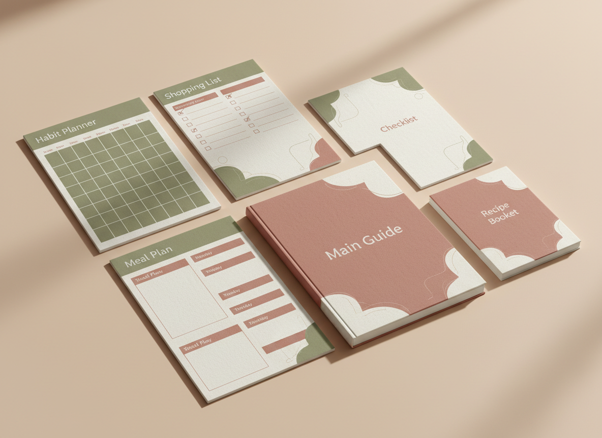
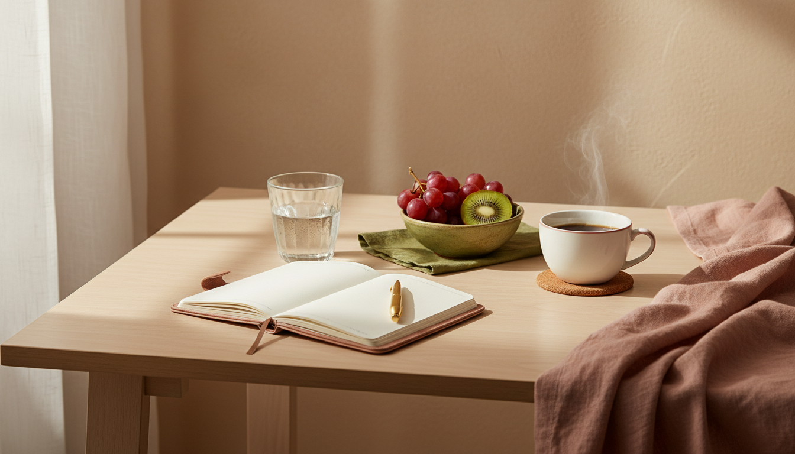

Tudo organizado
O método, dia a dia.
Organize sua alimentação, reduza os exageros e sinta-se mais leve em 21 dias — sem dieta maluca, sem cortar tudo que você gosta e sem academia obrigatória.

O método, dia a dia.
Inclusos no acesso.
É que os planos de sempre são radicais demais, vagos demais e ignoram o belisco da noite — onde o dia bom costuma desandar.
Toda semana o ciclo recomeça do zero.
O exagero mora nos beliscos depois do jantar.
Falta clareza, não informação.
Dá pra comer melhor gastando pouco.
Aqui o foco é rotina, não treino pesado.
O que falta é estrutura simples o bastante pra seguir.
Três semanas, três passos. Você constrói um andar de cada vez — no seu ritmo.

Saber o que comer e como montar o prato, sem decidir tudo na correria. Clareza para tirar a rotina do automático.
Diminuir os exageros e o belisco automático da noite — sem passar fome e sem cortar tudo que você gosta.
Transformar em hábito, com uma rotina mínima que se sustenta até nos dias caóticos. Para continuar depois dos 21 dias.
Aqui ninguém manda cortar arroz, feijão ou pão. É proporção e constância, não privação.

Arroz, feijão, ovo, frango, cuscuz, banana. Nada de ingrediente caro ou difícil de achar. O cardápio-base e a lista de compras econômica te mostram o que comprar e como montar — com opções de 10 minutos, sem fogão e de marmita.
Um sistema completo e enxuto — feito para a mulher real e ocupada.

O método completo com os 21 dias detalhados: o que fazer, por que importa e um exemplo prático por dia.
Compromisso, meta realista, vitória do dia e checkpoints. Para imprimir ou usar no celular.
Opções de 10 minutos, sem fogão, econômicas, de marmita e de fim de semana. É só montar.
Com a lista enxuta da semana para comer melhor gastando pouco.
Seu plano pronto para a hora da vontade, com trocas por situação real.
Com ingredientes, tempo, rendimento e custo aproximado.
Opcional, sem equipamento, com versões de 5, 10 e 15 minutos.
Para fechar o dia sem exagero, quando bate a vontade de comer por cansaço.
O exagero raramente está no almoço — ele aparece à noite, no cansaço. Por isso o Checklist Anti-belisco e o Ritual Noturno te dão um plano pronto para a hora da vontade: uma pausa, um chá, a cozinha “fechada” e a noite a seu favor.

Preço de lançamento. Estamos validando a primeira versão pública do Corpo Leve 21D. Por isso, o acesso completo está disponível por R$37 nesta fase inicial — cerca de 62% abaixo do valor de referência de R$97. O valor poderá ser reajustado futuramente.
No checkout, você pode incluir o Pack Doces Sem Neura por +R$17 — opcional.
Garantia de 7 dias. Você tem 7 dias para acessar o material e decidir se faz sentido para você. Se não for para você, é só solicitar o reembolso pelo suporte.
Primeira versão pública disponível por preço de lançamento.
O Corpo Leve 21D foi criado como um guia educativo de organização alimentar e hábitos leves, com foco em rotina, praticidade e constância. Não somos clínica e não prometemos milagre: este é um material educativo e não substitui o acompanhamento de um profissional de saúde. Ele nasceu para ajudar mulheres cansadas de recomeçar toda segunda a montar uma rotina possível.
Espaço reservado para depoimentos reais de quem testou o material.
(a ser preenchido com consentimento — sem depoimentos inventados.)
O método foi feito justamente para quem nunca consegue manter. As metas são pequenas, cada dia diz o que fazer e há uma “rotina mínima” para os dias caóticos. Um dia fora não te faz recomeçar do zero.
Não. Nenhum alimento é proibido — nem arroz, nem feijão, nem pão, nem doce. O foco é proporção e reduzir exageros, não privação.
Não. O treino é um bônus opcional, em casa e sem equipamento (tem versão de 5 minutos). O método funciona mesmo sem ele.
A gente não promete um número na balança nem prazo de resultado. O objetivo é te ajudar a organizar a rotina, reduzir exageros e se sentir mais leve. Resultados variam de pessoa para pessoa.
É 100% digital. Logo após a compra, o acesso é liberado para você baixar no celular ou no computador.
Você tem 7 dias de garantia. Se não for pra você, pede o reembolso para o suporte e recebe o valor de volta, sem complicação.
Este é um material educativo e não substitui acompanhamento profissional. Nesses casos, fale com seu médico ou nutricionista antes de mudar sua alimentação.
De R$97 por R$37 · 62% OFF · economize R$60 · garantia de 7 dias
Preço de lançamento válido durante a fase inicial do projeto.